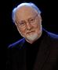
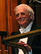
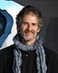
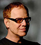

Programme des festivités: 18h Ouverture des portes / 20h Début du show avec tous les compositeurs / à partir de 00h Grand feu d'artifice et festivités autour du cinéma
PRESENTATION DES COMPOSITEURS (dans l'ordre d'apparition)
* John WILLIAMS 
- Heure de passage : 20h05
- Films : Star Wars : Le Retour du Jedi / Superman / Indiana Jones III / Harry Potter à l'école des sorciers / Men in Black
- Heure de passage : 20h05
- Films : Star Wars : Le Retour du Jedi / Superman / Indiana Jones III / Harry Potter à l'école des sorciers / Men in Black
* Jerry GOLDSMITH 
- Heure de passage : 20h35
- Films :L'Age de cristal / Alien - Le huitième passager / Gremlins / Total Recall
- Heure de passage : 20h35
- Films :L'Age de cristal / Alien - Le huitième passager / Gremlins / Total Recall
* James Horner 
- Heure de passage : 21h35
- Films : Spider-Man / Willow / Braveheart / Titanic / Le Masque de Zorro / Avatar
- Heure de passage : 21h35
- Films : Spider-Man / Willow / Braveheart / Titanic / Le Masque de Zorro / Avatar
* Danny ELFMAN 
- Heure de passage : 22h05
- Films : Beetlejuice / Fantômes en fête (Scrooged) / L'Etrange Noël de monsieur Jack / Men in Black / Terminator Renaissance / Epic
- Heure de passage : 22h05
- Films : Beetlejuice / Fantômes en fête (Scrooged) / L'Etrange Noël de monsieur Jack / Men in Black / Terminator Renaissance / Epic
* GUEST : Alan SILVESTRI 
- Heure de passage : 22h35
- Films : Super Mario Bross (1993) / The Avengers (2010)
- Heure de passage : 22h35
- Films : Super Mario Bross (1993) / The Avengers (2010)
* GUEST : Joe HISAISHI
- Heure de passage : 23h05
- Films : Ni no Kuni (2011) / Le vent se lève (2013)
- Heure de passage : 23h05
- Films : Ni no Kuni (2011) / Le vent se lève (2013)